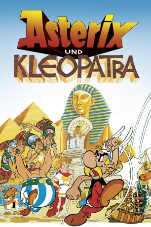

#2995 Asterix und Kleopatra (Hessisch)
Alternativ: Asterix and Cleopatra (Englischer Titel)
 
 IMDB-Wertung: 7.2 / 10
IMDB-Wertung: 7.2 / 10  Metascore: 0
Metascore: 0 
Königin Kleopatra ärgert sich maßlos über Julius Cäsar, der ihr Volk als minderwertig und heruntergekommen hinstellt. Deshalb schließt sie mit ihm eine Wette ab, bei der ihre Leute innerhalb von 3 Monaten einen kompletten Palast in Alexandrien errichten sollen. Architekt Numerobis, der die Leitung des Bauprojekts übernehmen muss, bittet den Druiden Miraculix um Hilfe. Natürlich sind auch Asterix und Obelix dabei mit von der Partie. Cäsar ist jedoch mit allen Wassern gewaschen und legt den 3 Galliern einen Stein nach dem anderen in den Weg.
Jahr: 1968
Dauer: 69 Minuten
FSK: 6
Land: Frankreich Studio: Jugendfilm-VerleihTonspuren:
Untertitel:
Auflösung: SD (640x468) Größe: 973 MB
Genre: Komödie, Abenteuer, Animation/Trick, Familie, Geschichte
Regisseur: René Goscinny, Albert Uderzo
Drehbuch: René Goscinny, Albert Uderzo, Jos Marissen, Eddie Lateste, Pierre Tchernia
Soundtrack: Gérard Calvi
Darsteller:
Datei: X:\Kinder Collections\Asterix Mundart\Asterix und Kleopatra (Hessisch) (1968, FSK6, 640x468).mkv seit 14.01.2016
Festplatte: Kinder-Filme+Trick
 Es gibt insgesamt 10 Filme in der Gruppe 'Kinder Collections\Asterix Mundart'
Es gibt insgesamt 10 Filme in der Gruppe 'Kinder Collections\Asterix Mundart'